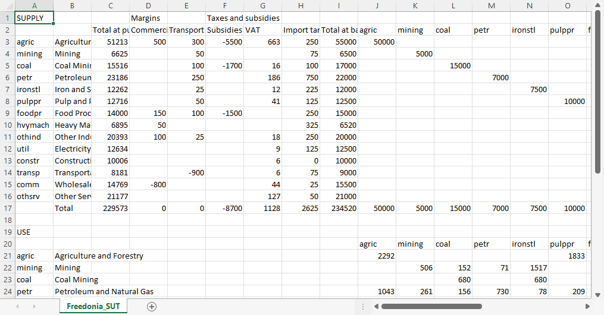

Supply-use table
Supply and use tables (or "supply-use tables" for short) are part of national economic accounts.
The supply table records payments for goods and services sold by businesses within the country, together with imports. To those "basic" values are added taxes net of subsidies, as well as an adjustment for trade and transport margins. The margins correct for goods, such as produce, whose sales are recorded in, say, wholesale trade or commercial transport. The margins subtract their value from wholesale and commercial transport and add an equivalent value to, in this example, agricultural produce.
The use table records sales of goods and services to businesses – termed intermediate use – as well as sales to households and the government – final domestic use – and to export markets. Sales are also recorded for investment goods, such as buildings and machinery. Sometimes investment is reported separately for business, households, and the government. Total sales by businesses, net of intermediate payments, is "value added". In the use table, value added is allocated to payments to so-called "factors of production", in particular the wages and salaries of employees and the businesses' profit, together with associated taxes and social payments.
Unlike GDP, which is updated at least each year, and sometimes more frequently, supply-use tables are calculated infrequently. In some countries the national statistical office may not report supply-use tables at all. If none is available, then the Macro model cannot be applied. However, by now a large number of countries do have at least one set of supply-use tables, whether reported specifically as a set of supply and use tables or as part of a social accounting matrix (SAM).
The International Food Policy Research Institute (IFPRI) has been assisting countries with constructing SAMs. They make the datasets and documentation available on the IFPRI Dataverse.
Format of the supply-use table
The supply-use table is the most flexible of the Macro input files. That is because supply-use tables vary widely in their level of detail and layout. However, the form required by Macro does have some restrictions, so some processing is normally required:
- All of the tables must be in a single comma-separated variable (CSV) file;
- The tables and columns must be oriented in a specific direction;
- To be summed together, groups of columns must be next to each other.
Because of the Macro model logic, it is best if the table is not too disaggregated. Specifically, different products should not be close substitutes for one another. For example, if crops are represented, then "cereals" might be a useful category, but reporting different cereal grains as separate products – such as rice, wheat, maize, and sorghum – could be problematic if they are readily substituted in diets. If one of those grains were very unlikely to be substituted for the others, such as rice, then "rice" and "other cereals" could be a reasonable level of aggregation.
CSV-formatted files are plain text files that can be viewed in a text editor. They can also be opened and modified in Excel, Google Sheets, or other spreadsheet program, which is a convenient way to edit them. Here is a portion of the supply-use table for the Freedonia example model, opened in Excel: 